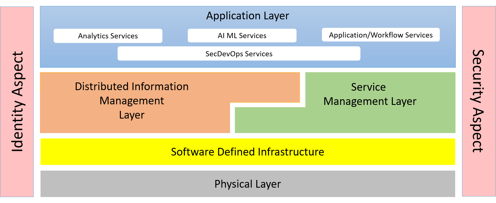
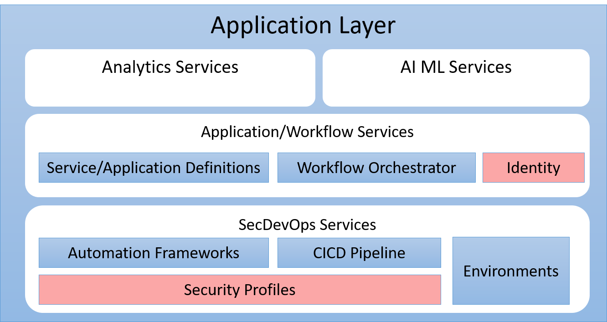

Application Management Layer
Application Management Layer is responsible for the management of applications and workflows andthe development, test, deployment and updates of those applications and workloads
The Application Management Layer (AML) contains abstractions that help App Development,
DevOps, and IT Operations manage complex workflows and applications through the application
development lifecycle. The AML sits at the top of the system stack and communicates directly with
the Distributed Information Layer and the
Service Management Layer. It also leverages the
Identity Aspect and
Security Aspect layers.

The AML contains for sub packages that group common off the shelf tools integrated together.
In the Analytics Services package common tools for analytics can be found including collection,
analytics and insight. AI/ML Services represent the myrid of tools and services that focus
on Artificial Intelligence and Machine Learning algorithms, and solutions.
These two packages take advantage of the application and workflow services which allow
these solutions to be orchestrated at the highest level of integration by providing a
framework and common definition framework to show how these applications and workflow
interact.
There are several tool suites that have been built to aid SecDevOps. These tools are
grouped together in the SecDevOps Services and include Automation Frameworks (Salt,Chef,
puppet, ansible), CICD tools (Gitlab, GitHub, Jenkins, etc...) and Environment Management.

Use Cases

Users

Interface
Logical Artifacts
The Data Model for the Application Management Layer shows how the different objects and classes of object interact
and their structure.

Sub Packages
Classes
Activities and Flows
The Application Management Layer subsystem provides the following activities and flows.

Deployment Architecture
This subsystem is deployed using micro-services as shown in the diagram below. The 'micro' module is
used to implement the micro-services in the system.
The subsystem also has an CLI, REST and Web Interface exposed through a sailajs application. The sailsjs
application will interface with the micro-services and can monitor and drive work-flows through the mesh of
micro-services.

Physical Architecture
The Application Management Layer subsystem is is physically laid out on a hybrid cloud infrastructure. Each microservice is shown
how they connect to each other. All of the micro-services communicate to each other and the main app through a
REST interface. A CLI, REST or Web interface for the app is how other subsystems or actors interact. Requests are
forwarded to micro-services through the REST interface of each micro-service.

Micro-Services
These are the micro-services for the subsystem. The combination of the micro-services help implement
the subsystem's logic.
dev
- frontend : _aml_web
- gw : _aml_gw
test
- frontend : _aml_web
- gw : _aml_gw
prod
- frontend : _aml_web
- gw : _aml_gw
Interface Details
/edgemere/aml/aimodel/list
- REST - /edgemere/aml/aimodel/list
- bin - edgemere aml aimodel list
- js - .edgemere.aml.aimodel.list
Description of the action
| Name |
Type |
Required |
Description |
| attr1 |
string |
false |
Description for the parameter |
/edgemere/aml/application/list
- REST - /edgemere/aml/application/list
- bin - edgemere aml application list
- js - .edgemere.aml.application.list
Description of the action
| Name |
Type |
Required |
Description |
| attr1 |
string |
false |
Description for the parameter |
/edgemere/aml/workflow/list
- REST - /edgemere/aml/workflow/list
- bin - edgemere aml workflow list
- js - .edgemere.aml.workflow.list
Description of the action
| Name |
Type |
Required |
Description |
| attr1 |
string |
false |
Description for the parameter |